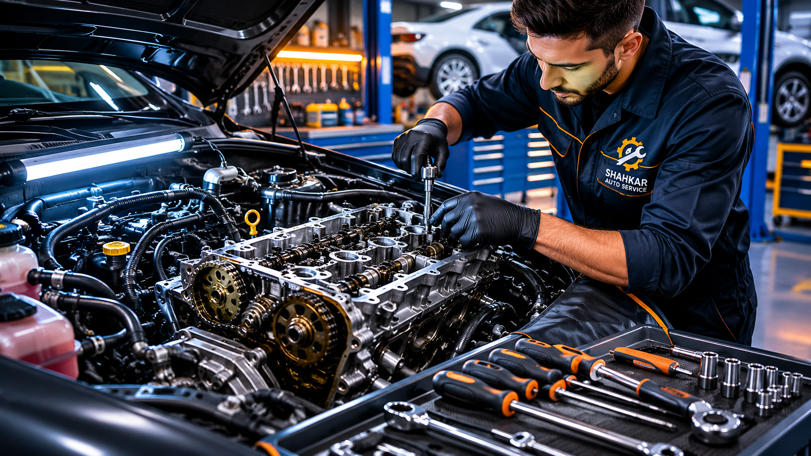

تعمیر، عیبیابی و بازسازی کامل موتور انواع خودروهای داخلی و خارجی با استفاده از تجهیزات پیشرفته و قطعات اصلی.
رزرو این خدمتموتور قلب خودرو است و عملکرد صحیح آن نقش مهمی در قدرت، مصرف سوخت و ایمنی خودرو دارد. در تعمیرگاه شاهکار با استفاده از تجهیزات پیشرفته و قطعات اصلی، تمامی مراحل عیبیابی و تعمیر موتور توسط تکنسینهای متخصص انجام میشود.

تمامی مراحل تعمیر مطابق استاندارد و توسط تکنسینهای متخصص انجام میشود.
ثبت اطلاعات خودرو و بررسی اولیه توسط کارشناسان.
بررسی کامل موتور با دستگاههای پیشرفته دیاگ.
انجام تعمیرات با استفاده از قطعات اصلی و ابزار استاندارد.
بررسی عملکرد موتور و تست کامل خودرو قبل از تحویل.
بسته به نوع خرابی، تعمیر موتور میتواند شامل یک یا چند مورد از خدمات زیر باشد.
مشاهده هر یک از علائم زیر میتواند نشانه وجود مشکل در موتور خودرو باشد. در صورت بیتوجهی، احتمال افزایش هزینه تعمیر وجود دارد.